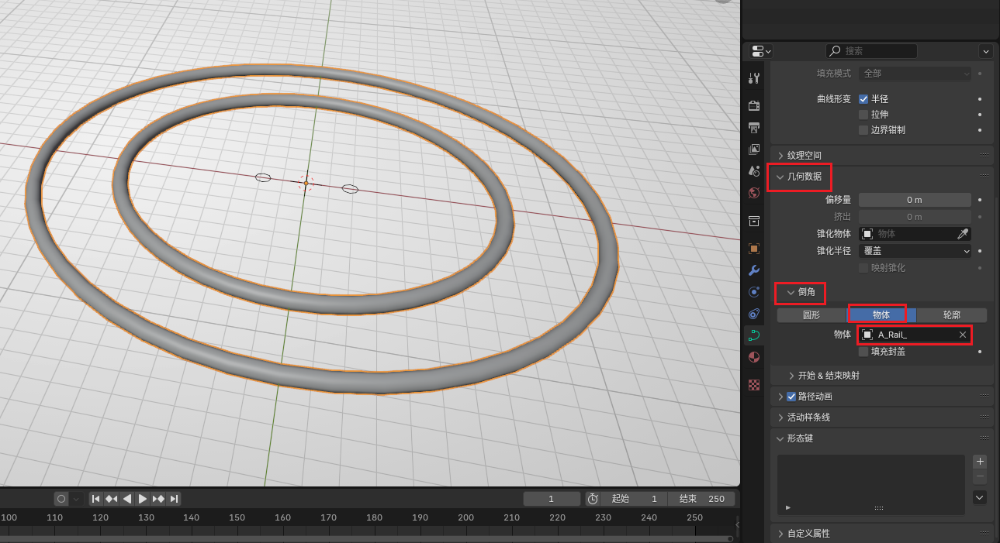
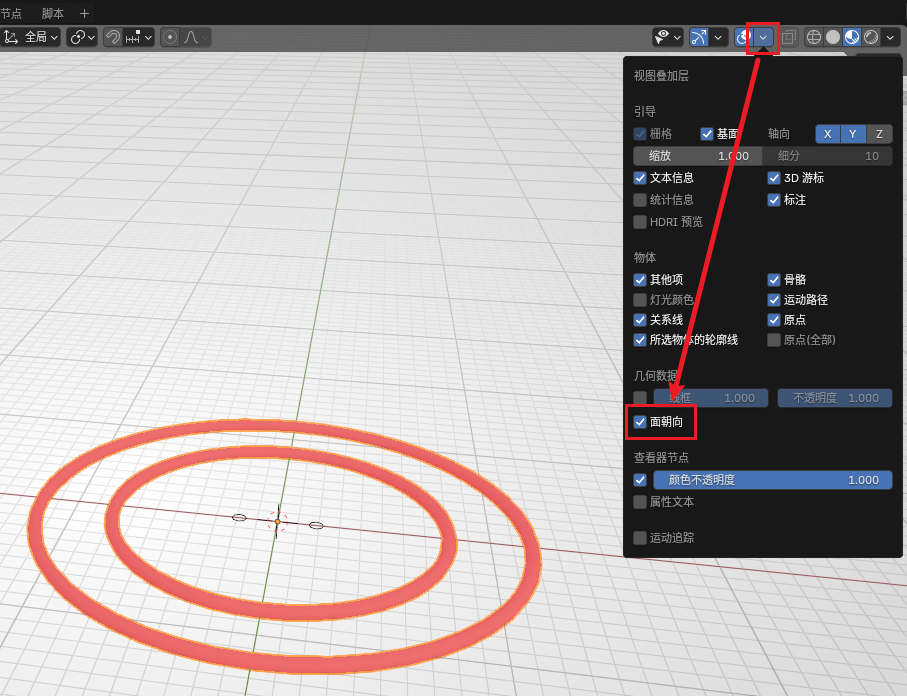

放样制作钢轨#
原版游戏13关最后一小节有非常复杂的螺旋轨道，可以达到类似过山车的效果，本章内容将演示如何制作花式钢轨。
准备截面#
截面可使用 BBP 提供的钢轨截面。这里我们用双轨举例。
首先可以直接在 添加 - Rails - Rail Section 创建一个钢轨截面，它的形状应该是两个正八边形。在生成时也可以在左下方的交互窗口内选择单轨。此时的截面不可以直接用于放样，我们需要做两步预处理：
- 由于默认朝向为 Y 轴方向，这里需要将其绕 X 轴旋转
90°，使其完全处于 XY 平面上，然后按Ctrl + A选择应用旋转。 - 右键将其转换为曲线。
Note
钢轨截面也可根据钢轨参数手动创建。
如果在“顶视图”下观察可以看到两个正八边形的曲线即为成功。

绘制任意曲线#
在 Blender 中创建任意曲线。新手建议创建圆环（设置较大半径）尝试，熟练后可以创建贝塞尔曲线。本教程以最简单的圆环举例。
切记曲线不可以使用缩放操作。

放样#
在创建的曲线的面板中（不是截面）找到几何数据，将其中的倒角选择为“物体”，并将物体设置为刚刚的截面，即可看到生成的环形轨道。

如果你的曲线有角度较大的拐弯，制作的弧形轨道棱角分明时，可以在 数据 - 形状 - 预览分辨率 U 处可以设置每两个点之间的分段数。提高此处的数值可以创建更多分段，使最终的轨道看起来更平滑。但要注意过多的分段可能会造成游戏卡顿或物理 bug，在保证视觉效果的前提下尽量使用更少的分段。
放样结束后，还需要右键该曲线，将其转化为网格。转化为网格后，钢轨的截面就可以安全地删除了（也可以保留以备下一次放样）。
转为网格后，曲线就不能再编辑了，在转网格前务必将曲线参数调整正确。
后续处理#
归组#
该放样方法制作的轨道是没有组信息的，直接导入游戏会不可碰撞。需要手动归组至如下图的三个组：

翻面#
按下图打开“面朝向”显示：

如果观察到轨道的面是红色的，说明该面的朝内，在游戏内会导致视觉效果错误。此时我们进入编辑模式，选中所有红色的面，按下 Alt + N，然后选择翻转，观察到面变为蓝色即可。
补面#
如果你的钢轨不是环形钢轨，并且钢轨两端是外露的（既没有塞在路面里，也没有连接其它钢轨等），那么尽量将断面补齐，否则游戏内看会看到空心的钢轨。
进入编辑模式，选中断面的8个顶点，按 F 即可创建面。默认情况下法线是正常处理的（即新加入的面不会影响原有法线信息）。若观察到断面不是“截断”的，而是类似于“圆头”的，那么选中钢轨，使用自动平滑着色，角度调整至 50° 即可。
材质#
该放样方法制作的轨道也没有材质信息，但好在钢轨的材质信息非常容易添加，只需在材质面板处添加 Rail 材质即可。如果没有找到这个材质，可以先从素材库中拖一个护栏出来，护栏上会带有这个材质。加好材质后就可以删除不需要的护栏。
如果材质延展不正确，可以在 Ballance 菜单中选择钢轨 UV，使材质变为像游戏中一样的视觉效果。